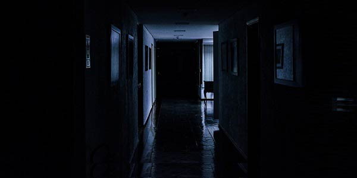

|
Curriculum Vitae Marianne Giovana Guimarães Sales Haddad |

|
|
Curriculum Vitae Marianne Giovana Guimarães Sales Haddad |
|
| Telefone: +55 92 4101-2912 |
Mobile/Whatsapp:+55 92 9.8198-1617 |
| E-mail: marianne.tchan@gmail.com | Discord Marry#9231 |
| Eu tenho muito medo do escuro, não sei explicar o porquê, eu apenas tenho. Eu basicamente cresci com esse medo, e durante um tempo eu havia conseguido controlar, um amigo havia me ajudado, mas depois simplesmente retornou. A ideia de não conseguir ver o que estar ao seu redor é muito agoniante para mim, e por vezes, toda vez que vou dormir deixo a luz do corredor ligada, e só assim consigo dormir tranquila, e as vezes nem isso dá certo e acabo acordando no meio da noite, e isso vem se tornando mais repetitivo. |  |
Descreva o dia que teve mais sorte na vida
Provavelmente, foi o dia em que eu contraí Catapora. Eu tinha 13 Anos e unca havia contraído a doença
e sempre ouvi que quanto mais velho você a contraí pior as bolhas ficam, e eu morria de medo de contrair
"velha de mais" e ficar com muitas marcas. Quando as primeiras bolhas apareceram eu fiquei aflita, pois
dizem que são muitas bolhas. Com o passar dos dias fui percebendo que pouquissimas bolhas apareceram,
logo percebi que não tinhas mais de 15 bolhas em cada braço, e alguns amigos até brincavam dizendo que minha
catapora era de "fresco". Eu melhorei em 5 dias, um tempo acima da média, e tenho apenas 5 marcas, duas no
braço, uma na perna e duas na barriga. :)
Gosta de animal de estimação? Descreve-os, referencie suas raças em sites da Web.
Gosto de peixes. Tive dois, ambos de uma mesma espécie, e os dois tinham o mesmo nome: Betal (eram da
espécie Beta e a falta de criatividade com palavras me fez por um 'l' no final. O primeiro Betal 1°,
era azul marinho com lindos detalhes vermelhos e roxos na cauda, as nadadeiras eram carmesim e ele era
bastante calmo, para um peixe de sua espécie, adorava comer, não gostava muito da ração artificial preferia
da em conserva, morreu com apenas 2 meses de vida,foi em uma quarta-feira e chorei muito, meus parentes
dizem que foi por fome, o segundo, Betal 2° durou 2 anos, assim como o primeiro era de um azul marinho
muito forte e bonito , detalhes em sua cauda erma marrons e vermelhos, suas nadadeiras eram roxas, morreu
de velhice.
Qual seu time de coração? Quando começou a torcer para tal? Referencie o nome do seu time com o site oficial dele.
Não tenho exatamente um time do coração para o futebol, torço junto com meu avô para o Flamengo e com o
meu padrasto para o Paysandu (o Papão como os torcedores chamam), para LoL, um e-sport, tenho meus
favoritos, a Kabum E-Gaming e o Flamengo E-Sports, a Kabum já levou o Brasil duas vezes para o mundial
e o Flamengo está nos dando a esperança de que, se ganhar as etapas regionais e ir para o mundial, nos
levará para o mais longe na qual nunca chegamos. Além destes dois, torço muito para a Vivo Keyd (TA FORA DE MICAO POSIÇÃO)
Você tem heróis? Quem seria? Por que gosta tanto dele?
Bem eu tenho alguns heróis, reais e da ficção. Os da ficção são mais fáceis de falar sobre: Laterna
Verde (Hal Jordan), o primeiro lanterna verde da Terra, ele é uma inspiração pra mim, porque como o
Anel de Poder pede, ele tem muita força de vontade, tendo a 2° maior força de vontade de seu setor
(ele assumiu o lugar do portador do anel antigo, que era o ser com mais força de vontade de seu setor,
após a morte do mesmo); Rankorr e Razer, dois lanternas vermelhos que apesar de serem da tropa do ódio
ele mudaram movidos pela luz azul da Tropa Dos Lanternas Azuis, uma inspiração de mudança, afinal eles
só queriam mudar e proteger quem amavam, e não expressaram isso da melhor forma; Mulher-Maravilha, nos
quadrinhos ela tem origem na força feminina de se libertar da opressão masculina (arcos anteriores a
Crise nas infinitas Terras), atualmente sua origem a Princesa Diana ela é uma Amazona, as guerreiras
lendárias que batalhavam e viviam apenas entre mulheres, ela é um exemplo a ser seguido por mim. Agora
os reais: Walt Disney e Ub Iwers, eu quero trabalhar com desenho, e pra mim não tem exemplo melhor que
essa dupla, se conheceram na faculdade e passaram quase toda a carreira de ambos juntos, Walt teve um
estúdio antes do Walt Disney Studios, mas este faliu e poucos continuaram com ele após isso, e um deles
foi Ub, Ub hoje é considerado o maior animador de todos os tempos, até maior que o próprio Walt; Marie Curie,
primeira mulher a ganhar um nobel e a primeira pessoa a ganhar dois, pelas suas pesquisas e descobertas
sobre a radiação, foi uma das maiores presenças femininas na história da física um exemplo para todas
as mulheres; e por último minha mãe, ela é minha heroína pois sem ela eu nunca teria inspiração para ser
quem eu sou, sem medo de ser eu.
Informe algumas musicas favoritas suas.
I'm Still Here(Jim's Theme) - John Rzeznik
Bitch Lasagna - Party in Backwars, pewdiepie
Children Record - Jin, Maria
Informe alguns videos do youtube favoritos seus.
Você tem sonhos? Pode enumerar alguns?
Em relação a FMM, Por que escolheu o curso de Informática?
Eu entrei na Fundação pois queria fazer jogos, trabalhar como game designer. Na época eu já desenhava, mas não imaginava que desenhar fosse o que eu iria querer para a vida. Quando eu cheguei aqui foi muito diferente do que eu pensava, pra dizer a verdade eu nunca havio parado pra pensar como seria depois que eu entrasse. Eu ainda quero fazer jogos, e talvez seja isso que ainda me mova até aqui, pois FINALMENTE estamos estudando games, e o Prof° Sylker é alguém que começou na minha área. "Laugher is timeless, imagination has no age and dreams are forever." - Walt Disney
Fique a vontade para acrescentar Informações, se preferir.